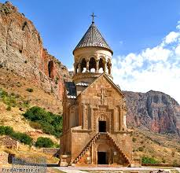

Armenia officially the Republic of Armenia,is a landlocked country in the Armenian Highlands of West Asia.[15][16] It is a part of the Caucasus region and is bordered by Turkey to the west, Georgia to the north and Azerbaijan to the east, and Iran and the Azerbaijani exclave of Nakhchivan to the south.[17] Yerevan is the capital, largest city and financial center. Armenia is a unitary, multi-party, democratic nation-state with an ancient cultural heritage. The first Armenian state of Urartu was established in 860 BC, and by the 6th century BC it was replaced by the Satrapy of Armenia. The Kingdom of Armenia reached its height under Tigranes the Great in the 1st century BC and in the year 301 became the first state in the world to adopt Christianity as its official religion.[18][19][20][c] Armenia still recognises the Armenian Apostolic Church, the world's oldest national church, as the country's primary religious establishment.[21][d] The ancient Armenian kingdom was split between the Byzantine and Sasanian Empires around the early 5th century. Under the Bagratuni dynasty, the Bagratid Kingdom of Armenia was restored in the 9th century before falling in 1045. Cilician Armenia, an Armenian principality and later a kingdom, was located on the coast of the Mediterranean Sea between the 11th and 14th centuries.
